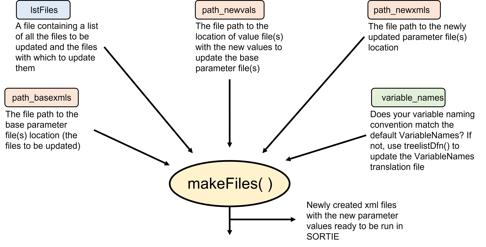

Using makeFiles
Alana Clason
2022-03-02
using_makeFiles.RmdThis vignette describes how to create one or more new SORTIE parameter files that will substitute new values or chunks of .xml code from the base SORTIE parameter file.
These are the components that makeFiles() needs to run:

In this vignette, we assume the user has read and understood the “rsortie Basics” and “Preparing inputs of rsortie” vignettes and their files are ready to run.
2. Optional Set your pathways
While creating a folder structure is entirely up to the user, we typically default to a system that helps us keep track of the various files required to create and store SORTIE parameter files.
For example:
Inputs
- FileLists
- ParameterFiles
- BaseFiles
- BaseFiles
- ParameterValues
rsortie allows pathway arguments to be passed to the makeFiles function in order to accommodate the folder structure outlined above, or any user-defined pathways. If you are using a Rstudio project, you can use relative pathways, which helps make code more reproducible on other computers.
# Change the loc_path to your working directory
loc_path <- "ExampleDirectory/ProjectName/Inputs/"
# Pathway to base .xml file(s)
My_basePath <- paste0(loc_path, "ParameterFiles/BaseFiles/")
# Pathway to file(s) containing the new values with which
# to update the base parameter file
My_newvalsPath <- paste0(loc_path, "ParameterValues/")
# Pathway to location of newly created/ updated parameter
# files
My_newxmlPath <- paste0(loc_path, "ParameterFiles/")Alternatively, all files can be stored and written to the working directory, and in that case, no pathways would be passed to makeFiles().
3. Optional Update VariableNames
Any new variables and behaviours can be appended to the default VariableNames object, or a user-defined VariableNames table can be passed to makeFiles(). See the Preparing inputs for rsortie vignette for detailed description of the requirements for building a VariableNames table.
Within rsortie, we currently support adding the necessary initial tree density size naming convention and size classes to add to the default VariableNames object.
`?`(treelistDfn)
tail(VariableNames)
# for example
My_Names <- treelistDfn(initname = "InitialStems", numDigits = 1,
diamMin = 1.5, diamMax = 100, diamInc = 1.5)
tail(My_Names)